This section discusses the following topics:
| crv | |
| Draws a cubic spline curve. | |
| crvn | |
| Draws a series of cubic spline curves. | |
| curvebasis | |
| Sets the current cubic spline curve basis matrix. | |
| curveit | |
| Draws a curve segment by iterating the forward difference matrix. | |
| curveprecision | |
| Sets the number of line segments that compose a cubic spline curve. | |
| defbasis | |
| Defines a cubic spline basis matrix. | |
| patch | |
| Draws a cubic spline surface patch. | |
| patchbasis | |
| Sets the current spline surface basis matrices. | |
| patchcurves | |
| Sets the number of curves used to represent a patch. | |
| patchprecision | |
| Sets the precision at which curves are drawn. | |
| rcrv | |
| Draws a rational cubic spline curve. | |
| rcrvn | |
| Draws a series of rational curve segments. | |
| rpatch | |
| Draws a rational cubic spline surface patch. | |
This section describes the models, mathematics, and programming statements used for drawing curves and surfaces that were available before the NURBS functions that have been introduced in the latest release of GL. These techniques and GL functions are still supported for compatibility with programs written for earlier versions of GL.
You draw a curve segment by specifying:
You create complex curved lines by joining several curve segments end to end. The curve facility provides the means for making smooth joints between the segments.
Three-dimensional surfaces, or patches, are represented by a wire frame of curve segments. You draw a patch by specifying:
You can create complex surfaces by joining several patches into one large patch.
The mathematical basis for the GL curve facility is the parametric cubic curve. The curves in most applications are too complex to be represented by a single curve segment and instead must be represented by a series of curve segments joined end to end. To create smooth joints, you must control the positions and curvatures at the endpoints of curve segments. Parametric cubic curves are the lowest order representation of curve segments that provide continuity of position, slope, and curvature at the point where two curve segments meet.
In the following equation, a parametric cubic curve has the property that x, y, and z can be defined as third-order polynomials for variable t :
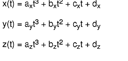A cubic curve segment is defined over a range of values for t (usually 0 ≤ t ≤ 1), and can be expressed as a vector product as in this equation:
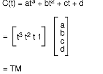GL approximates the shape of a curve segment with a series of straight line segments. The endpoints for all the line segments can be computed by evaluating the vector product C(t) for a series of t values between 0 and 1. The shape of the curve segment is determined by the coefficients of the vector product, which are stored in column vector M. These coefficients can be expressed as a function of a set of four control points. Thus, the vector product becomes
C(t) = T M = T (B G)
where G is a set of four control points, or the geometry, and B is a matrix called the basis. The basis matrix is determined from a set of constraints that express how the shape of the curve segment relates to the control points. For example, a constraint might be that one endpoint of the curve segment is located at the first control point; or the tangent vector at that endpoint lies on the line segment formed by the first two control points. When the vector product C is solved for a particular set of constraints, the coefficients of the vector product are identified as a function of four variables (the control points). Then, given four control points, you can use the vector product to generate the points on the curve segment.
There are three classes of cubic curves: Bezier, Cardinal spline, and B-spline. Each has a set of constraints that define its class, plus a basis matrix derived from those constraints that you can use to draw curve segments.
A Bezier cubic curve segment passes through the first and fourth control points and uses the second and third points to determine the shape of the curve segment. Of the three kinds of curves, the Bezier form provides the most intuitive control over the shape of the curve. The Bezier basis matrix is derived from the following four constraints:
One endpoint of the segment is located at p(1):
The other endpoint is located at p(4):
The first derivative, or slope, of the segment at one endpoint is equal to this value:
The first derivative at the other endpoint is equal to this value:
Solving for these constraints yields this equation:
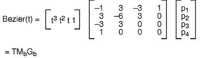You can generate all the points on the Bezier cubic curve segment from p(1) to p(4) by evaluating Bezier(t) for 0 ≤ t ≤ 1. It is more efficient, however, to construct a forward difference matrix that generates the points in a curve segment incrementally.
The following figure, Bezier, Cardinal, and B-Spline Curves, shows three Bezier curve segments. The first segment uses points 0, 1, 2, and 3 as control points. The second uses 1, 2, 3, and 4. The third uses 2, 3, 4, and 5. You can use the technique of overlapping sets of control points more effectively with the following two classes of cubic curves to create a single large curve from a series of curve segments.
In the following figure, a spline curve segment passes through the two interior control points and is continuous in the first derivative at the points where segments meet. The curve segment starts at p(2) and ends at p ( 3), and uses p(1) and p(4) to define the shape of the curve.
Three different curves are shown with appropriate basis matrices. With the Bezier basis matrix, three sets of overlapping control points result in three separate curve segments. With the Cardinal spline and B-spline matrices, the same overlapping sets of control points result in three joined curve segments.
The Cardinal spline basis matrix is derived from the following four constraints:
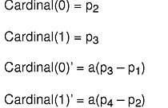The scalar coefficient a must be positive; it determines the length of the tangent vector at point:
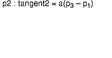 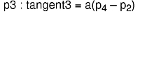Solving for these constraints yields the following equation:
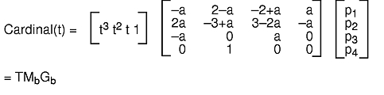The three joined Cardinal spline curve segments in the Bezier, Cardinal, and B-Spline Curves figure use the same three sets of control points as the Bezier curve segments. Many different bases have Cardinal spline properties. You can derive the different bases by trying different values of a.
In general, a B-spline curve segment does not pass through any control points, but is continuous in both the first and second derivatives at the points where segments meet. Thus, a series of joined B-spline curve segments is smoother than a series of Cardinal spline segments (see the Bezier, Cardinal, and B-Spline Curves figure).
The B-spline basis matrix is derived from the following four constraints:
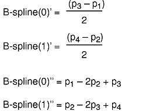Solving for these constraints yields the following equation:
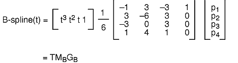Drawing a curve segment on the screen involves four steps:
The defbasis subroutine defines and names a basis matrix to generate curves and patches. The value of the mat parameter is saved and is associated with the id parameter. Use the id parameter in subsequent calls to the curvebasis and patchbasis subroutines. The syntax is as follows:
void defbasis(Int32 id, Matrix mat)
The curvebasis subroutine selects a basis matrix (defined by the defbasis subroutine) as the current basis matrix to draw curve segments. The syntax is as follows:
void curvebasis(Int32 basis_id)
The curveprecision subroutine specifies the number of line segments used to draw a curve. Whenever the crv, crvn, rcrv, or rcrvn subroutine executes, a number of straight line segments (the value of the nsegments parameter) approximates each curve segment. The greater the value of the nsegments parameter, the smoother the curve, but the longer the drawing time. The syntax is as follows:
void curveprecision(Int16 nsegments)
The crv subroutine draws the curve segment using the current basis matrix, the current curve precision, and the four control points specified in the points parameter. The syntax is as follows:
void crv(Coord points[4][3])
When you issue the crv command, a matrix is built from the geometry, the current basis, and the current precision:
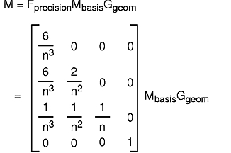where n = the current precision. The bottom row of the resulting transformation matrix identifies the first of n points that describe the curve. To generate the remaining points in the curve, the following algorithm is used to iterate the matrix as a forward difference matrix. The third row is added to the fourth row, the second row is added to the third row, and the first row is added to the second row. The fourth row is then output as one of the points on the curve.
/* This is the forward difference algorithm */
/* M is the current transformation matrix */
move (M[3][0]/M[3][3], M[3][1]/M[3][3], M[3][2]/M[3][3]);
/* iteration loop */
for (cnt = 0; cnt < iterationcount; cnt++) {
for (i=3; i>0; i--)
for (j=0; j<4; j++)
M[i][j] = M[i][j] + M[i-1][j];
draw(M[3][0]/M[3][3], M[3][1]/M[3][3], M[3][2]/M[3][3]);
}
Each iteration draws one line segment of the curve segment. If the precision matrix on the previous page is iterated as a forward difference matrix, it generates the sequence of points:
This is the same sequence of points generated by the equation:
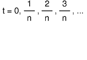 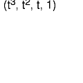The example program curve2.c (found in in GL3.2 Version 4 for AIX: Graphics Library (GL) Technical Reference) draws the three curve segments in the figure entitled Curve Segments. All use the same set of four control points, which is contained in the geom1 parameter. The three basis matrix arrays (beziermatrix, cardinalmatrix, and bsplinematrix) contain the values outlined in the Bezier, Cardinal, and B-Spline Curves figure.
Before the crv or rcrv subroutine is called, a basis and precision matrix must be defined. This is also true if the routines are compiled into an object.
Each of the curve segments in the previous figure uses the same set of four control points and the same precision, but a different basis matrix.
The crvn subroutine takes a series of control points and draws a series of cubic spline or rational cubic spline curve segments using the current basis and precision; the rcrvn subroutine draws rational splines. The control points specified in the geom parameter determine the shapes of the curve segments and are used four at a time. If the current basis is a B-spline, Cardinal spline, or basis with similar properties, the curve segments are joined end to end and appear as a single curve. Calling the crvn subroutine has the same effect as calling the crv subroutine with overlapping control points (see the Uniform Cubic B-Spline With No Rational Component figure). The syntax is as follows:
void crvn(Int32 n, Coord geom[][3])
When you issue this subroutine with a Cardinal spline or B-spline basis, it produces a single curve. However, a crvn subroutine issued with a Bezier basis produces several separate curve segments.
As with the crv and rcrv subroutines, a precision and basis must be defined before calling the crvn or rcrvn subroutine. This is true even if the routines are compiled into objects. The example program curve2.c (found in in GL3.2 Version 4 for AIX: Graphics Library (GL) Technical Reference) draws the three joined curve segments in the Bezier Surface Patch figure using the crvn subroutine. The geom2 parameter contains six control points.
The iteration loop of the forward difference algorithm is implemented in the graphics pipeline. The curveit subroutine provides direct access to this facility, making it possible to generate a curve directly from a forward difference matrix. This subroutine iterates the current matrix (the one on top of the matrix stack) as many times as indicated in the count parameter. Each iteration draws one of the line segments that approximate the curve. The syntax is as follows:
void curveit(Int16 count)
The curveit subroutine does not execute the initial move in the forward difference algorithm. A move(0.0,0.0,0.0) must precede the curveit subroutine so that the correct first point is generated from the forward difference matrix.
This example program curve3.c (found in in GL3.2 Version 4 for AIX: Graphics Library (GL) Technical Reference) draws the Bezier curve segment shown in the figure entitled Curve Segments using the curveit subroutine. The Cardinal spline and B-spline curve segments could be drawn using a similar sequence of commands—only the basis matrix would be different.
Cubic splines have been the focus of discussion. Cubic splines are splines whose x, y, and z coordinates can be expressed as a cubic polynomial in t.
GL actually works in homogeneous coordinates x, y, z, and w, where 3-D coordinates are given by xw, yw, and zw. The w coordinate is normally the constant 1, so the homogeneous character of the system is hidden.
In fact, the w coordinate can also be expressed as a cubic function of t, so that the 3-D coordinates of points along the curve are given as a quotient of two cubic polynomials. The only constraint is that the denominator for all three coordinates must be the same. When w is not the constant 1, but some cubic polynomial function of t, the curves generated are usually called parametric rational cubic curves.
A circle is a useful example. There is no cubic spline that exactly matches any short segment of a circle, but if x, y, z, and w are defined in this equation>:
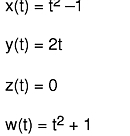the real coordinates, as shown in this equation,
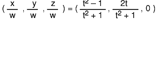all lie on the circle with center at (0,0,0) in the x-y plane with radius 1 (exactly). All the conic sections (ellipses, hyperbolas, parabolas) can be similarly defined.
For rational splines, the basis definitions and precision specifications are identical to those for cubic splines. The only difference is that the geometry matrix must be specified in four-dimensional homogeneous coordinates. This is done with the rcrv subroutine.
The rcrv subroutine draws a rational curve segment using the current basis matrix, the current curve precision, and the four control points specified in the its parameter. The syntax is as follows:
void rcrv(Coord geom[4][4])
The rcrv subroutine is exactly analogous to the crv subroutine, except that w coordinates are included in the control point definitions.
The rcrvn subroutine takes a series of control points given by the value of the n parameter and draws a series of parametric rational cubic curve segments, using the current basis and precision. The control points specified in the geom parameter determine the shapes of the curve segments and are used four at a time. The syntax is as follows:
void rcrvn(Int32 n, Coord geom[][4])
The method for drawing surfaces is similar to that for drawing curves. A surface patch appears on the screen as a wire frame of curve segments. A set of user-defined control points determines the shape of the patch. A complex surface consisting of several joined patches can be created by using overlapping sets of control points and the B-spline and Cardinal spline curve bases shown in the Bezier, Cardinal, and B-Spline Curves figure.
The mathematical basis for the GL surface facility is the parametric bicubic surface.
The parametric equation for x is:
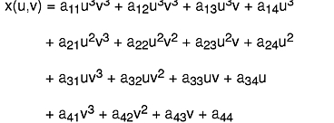(The equations for y and z are similar.) The points on a bicubic patch are defined by varying the parameters u and v from 0 to 1. If one parameter is held constant and the other varied from 0 to 1, the result is a cubic curve. Thus, a wire frame patch can be created by holding u constant at several values and using the GL curve facility to draw curve segments in one direction, and then doing the same for v in the other direction.
There are five steps involved in drawing a surface patch:
Note: The u basis and the v basis do not have to be the same.
The rpatch subroutine draws a rational surface patch.
The patchbasis subroutine sets the current basis matrices (defined by the defbasis subroutine) for the parametric directions of a surface patch as given in the uid and vid parameters. The syntax is as follows:
void patchbasis(Int32 uid, Int32 vid)
The patchcurves subroutine sets the current number of curves in both directions as given in the ucurves and vcurves parameters that represent a patch as a wire frame. The syntax is as follows:
void patchcurves(Int32 ucurves, Int32 vcurves)
The patchprecision subroutine sets the precision at which curves defining a wire frame patch are drawn. The u and v directions for a patch specify the precisions independently. Patch precisions specify the minimum number of line segments used to draw a patch. The syntax is as follows:
void patchprecision(Int32 usegments, Int32 vsegments)
The patch and rpatch subroutines draw a surface patch using the current values set by the patchbasis, patchprecision, and patchcurves subroutines. The rpatch subroutine draws a rational surface patch. The control points given in the geomx, geomy, and geomz parameters determine the shape of the patch. The control point given in the geomw parameter specifies the rational component of the patch to the rpatch subroutine. The syntax for the patch and rpatch subroutines is as follows:
void patch(Matrix geomx, Matrix geomy, Matrix geomz)
void rpatch(Matrix geomx, Matrix geomy, Matrix geomz, Matrix geomw)
The Bezier Surface Patch, Cardinal Spline Surface Patch, and B-Spline Surface Patch figures show the same number of curve segments and the same precisions but different basis matrices. All three use the same set of 16 control points.
The example program patch1.c (found in in GL3.2 Version 4 for AIX: Graphics Library (GL) Technical Reference) draws three surface patches similar to those shown in the foregoing figures.
You can join patches to create a more complex surface by using the Cardinal spline or B-spline bases and by overlapping sets of control points. The surface in the Joined Patches figure consists of three joined patches and was drawn using a Cardinal spline basis matrix.
{kind=link}
{kind=link}
{kind=link}
{kind=link}
{kind=link}
{kind=link}
{kind=link}
{kind=link}
{kind=link}
{kind=link}
{kind=link}
{kind=link}